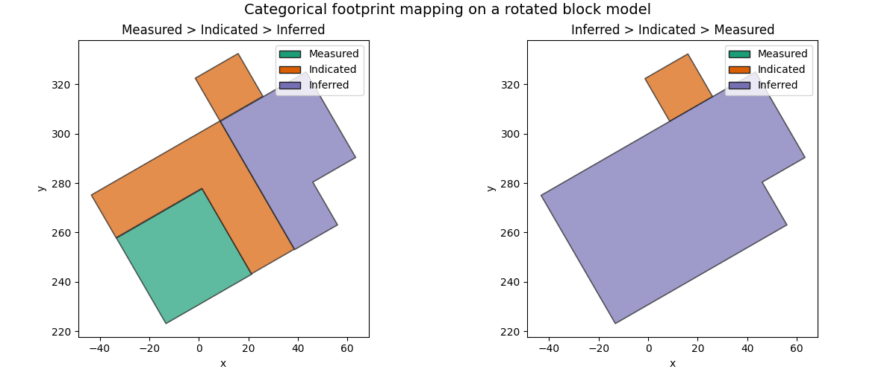

Note
Go to the end to download the full example code.
Categorical Footprint Mapping#
This example demonstrates precedence-aware categorical footprint mapping
from a parq_blockmodel.blockmodel.ParquetBlockModel.
The workflow is:
Build a rotated block model from geometry.
Create a categorical classification column with vertical overlap.
Select the participating categories for the footprint map.
Generate plan-view polygons in precedence order.
Compare the result to an alternative precedence order.
import tempfile
from pathlib import Path
import matplotlib.pyplot as plt
import numpy as np
import pandas as pd
from matplotlib.patches import Patch
from parq_blockmodel import LocalGeometry, ParquetBlockModel, RegularGeometry, WorldFrame
from parq_blockmodel.utils.geometry_utils import angles_to_axes
Create a rotated geometry-backed block model#
The footprint method works in model coordinates and supports rotated block models provided the logical columns are vertical in plan view.
temp_dir = Path(tempfile.gettempdir()) / "categorical_footprint_mapping_example"
temp_dir.mkdir(parents=True, exist_ok=True)
pbm_path = temp_dir / "categorical_footprint_mapping.pbm"
axis_u, axis_v, axis_w = angles_to_axes(axis_azimuth=30.0, axis_dip=0.0, axis_plunge=0.0)
geometry = RegularGeometry(
local=LocalGeometry(
corner=(100.0, 200.0, 0.0),
block_size=(20.0, 20.0, 10.0),
shape=(5, 4, 4),
),
world=WorldFrame(
axis_u=axis_u,
axis_v=axis_v,
axis_w=axis_w,
crs="EPSG:28350",
),
)
pbm = ParquetBlockModel.from_geometry(geometry=geometry, path=pbm_path)
Build a categorical column with overlapping vertical domains#
Measured should dominate where present, Indicated should fill gaps,
and Inferred should fill the remaining resource footprint.
Waste is included in the block model, but will be excluded from the
footprint output by passing an explicit categories= list.
blocks = pbm.read(columns=["block_id"], index="ijk", dense=True).reset_index()
classification = np.full(len(blocks), "Waste", dtype=object)
classification[(blocks["i"] <= 3) & (blocks["j"] <= 2) & (blocks["k"] == 0)] = "Inferred"
classification[(blocks["i"] <= 2) & (blocks["j"] <= 2) & (blocks["k"] == 1)] = "Indicated"
classification[(blocks["i"] <= 1) & (blocks["j"] <= 1) & (blocks["k"] == 2)] = "Measured"
classification[(blocks["i"] == 4) & (blocks["j"].isin([1, 2])) & (blocks["k"] == 0)] = "Inferred"
classification[(blocks["i"] == 3) & (blocks["j"] == 3) & (blocks["k"] == 1)] = "Indicated"
blocks["classification"] = pd.Categorical(
classification,
categories=["Waste", "Inferred", "Indicated", "Measured"],
ordered=True,
)
pbm.write(blocks[["block_id", "classification"]], merge=True)
print("Classification counts:")
print(pbm.read(columns=["classification"], index=None)["classification"].value_counts(dropna=False))
Classification counts:
classification
Waste 52
Inferred 14
Indicated 10
Measured 4
Name: count, dtype: int64
Generate the categorical footprint map#
Only the resource classes participate in the footprint. Because the source
column is ordered categorical, precedence=None would also be valid here.
resource_categories = ["Measured", "Indicated", "Inferred"]
gdf = pbm.to_categorical_geodataframe(
column="classification",
categories=resource_categories,
precedence=["Measured", "Indicated", "Inferred"],
)
print("Footprint polygons:")
print(gdf[["classification"]])
print("CRS:", gdf.crs)
Footprint polygons:
classification
0 Measured
1 Indicated
2 Indicated
3 Inferred
CRS: EPSG:28350
Compare alternative precedence orders#
Reversing precedence produces a different visible footprint where categories overlap vertically in the same logical columns.
gdf_reversed = pbm.to_categorical_geodataframe(
column="classification",
categories=resource_categories,
precedence=["Inferred", "Indicated", "Measured"],
)
Plot the precedence-sensitive plan-view output#
The left plot follows the common reporting pattern:
Measured first, then Indicated, then Inferred.
The right plot reverses that order so the effect is easy to see.
palette = {
"Measured": "#1b9e77",
"Indicated": "#d95f02",
"Inferred": "#7570b3",
}
fig, axes = plt.subplots(1, 2, figsize=(12, 5), constrained_layout=True)
legend_handles = [Patch(facecolor=palette[category], edgecolor="#222222", label=category) for category in resource_categories]
for ax, frame, title in [
(axes[0], gdf, "Measured > Indicated > Inferred"),
(axes[1], gdf_reversed, "Inferred > Indicated > Measured"),
]:
for category in resource_categories:
subset = frame.loc[frame["classification"] == category]
if subset.empty:
continue
subset.plot(
ax=ax,
facecolor=palette[category],
edgecolor="#222222",
linewidth=1.2,
alpha=0.7,
label=category,
)
ax.set_title(title)
ax.set_xlabel("x")
ax.set_ylabel("y")
ax.set_aspect("equal", adjustable="box")
ax.legend(handles=legend_handles, loc="best")
fig.suptitle("Categorical footprint mapping on a rotated block model", fontsize=14)

Indicated > Inferred, Inferred > Indicated > Measured" class = "sphx-glr-single-img"/>Text(0.5, 0.991666, 'Categorical footprint mapping on a rotated block model')
Summarise the visible footprint by class#
Area is reported in model XY units. The totals differ between the two precedence orders because different classes remain visible.
summary = gdf.assign(area=gdf.geometry.area).groupby("classification", observed=True)["area"].sum()
summary_reversed = gdf_reversed.assign(area=gdf_reversed.geometry.area).groupby(
"classification", observed=True
)["area"].sum()
print("Preferred precedence area summary:")
print(summary)
print()
print("Reversed precedence area summary:")
print(summary_reversed)
Preferred precedence area summary:
classification
Indicated 2400.0
Inferred 2000.0
Measured 1600.0
Name: area, dtype: float64
Reversed precedence area summary:
classification
Indicated 400.0
Inferred 5600.0
Name: area, dtype: float64
Total running time of the script: (0 minutes 0.805 seconds)